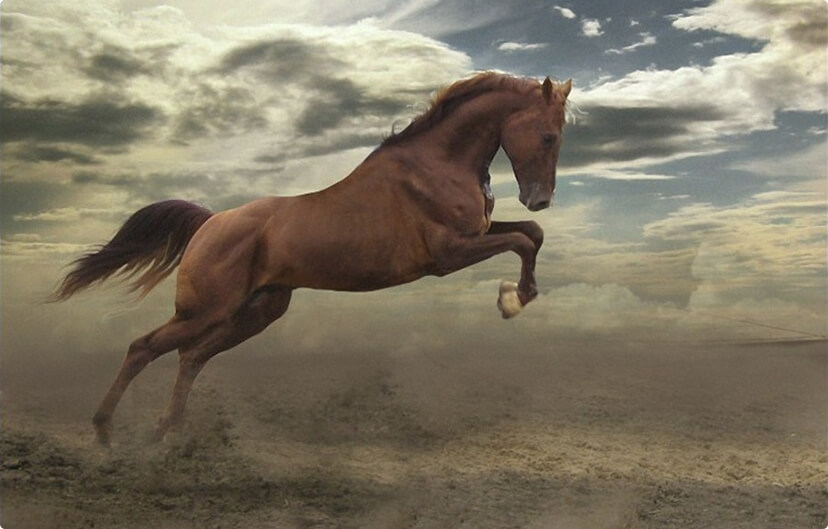
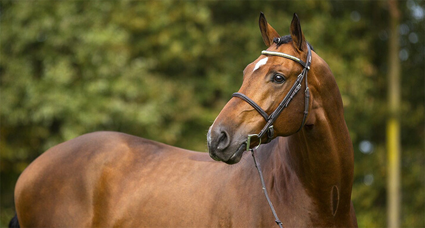
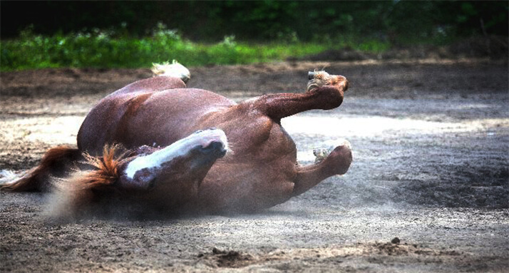
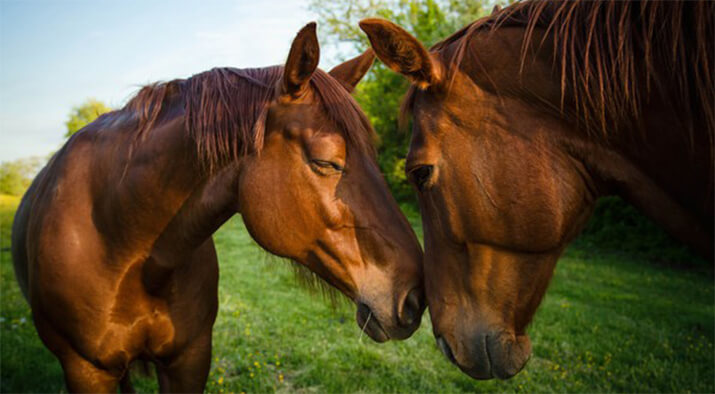
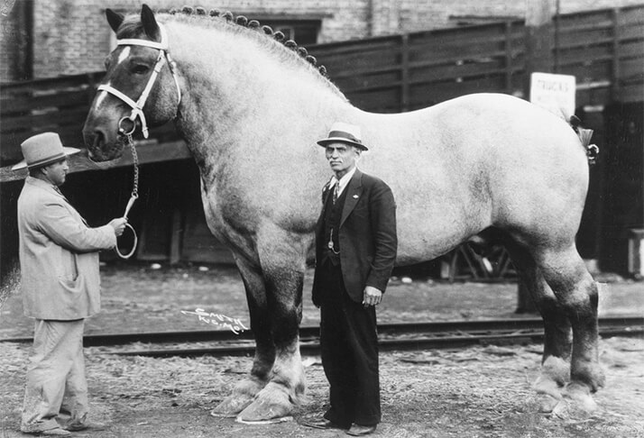

Интересное о лошадях
Интересное о лошадях

Лошади – это уникальные животные. Замечали ли вы, что они обладают целительной силой, способны влиять на психику человека, имеют невероятную грациозность, восхищая каждого? Лошади очень интересны, сильны, совершенны, и об этом свидетельствуют множество фактов:
- Лошадей используют для терапии опорно-двигательных проблем у людей. При движении лошадь передает всаднику импульс, точно повторяющий работу туловища человека при ходьбе, что в свою очередь помогает человеку избавиться от проблем с позвоночником.
- Лошадиная система пищеварения предназначена для постоянной переработки пищи. Поэтому лошади питаются растительной пищей почти непрерывно, но мелкими порциями.
- Имеют превосходное чутье и лучше любого компаса ориентируются в любую погоду и в любое время суток.
- У лошадей тончайший слух: они способны улавливать звуки, которые не слышит человек. Их ушные раковины устроены таким образом, что не только улавливают звуковые волны, но и усиливают их действие. 
- Лошади очень хорошо чувствуют и понимают опасность. Для них почувствовать наводнение или пожар, или ухудшение погоды - это обычное дело.
- В отличие от большинства животных, лошади видят мир цветным, однако плохо различают синий и красный цвета.
- У лошадей, как и у собак, превосходное обоняние, поэтому в старости, когда зрение ухудшается, лошади руководствуются только своим тончайшим обонянием. Также по запаху узнают своё седло и сбрую, с большого расстояния различают съедобные и несъедобные травы.
- Лошадь также способна сама себя лечить. Например, после длительной работы она с радостью валяется несколько минут, то есть делает себе массаж, который восстанавливает кровообращение. 
- Очень эффективное оружие — удар задним копытом, но его лошади используют только в самом крайнем случае.
- Способны видеть всё, что их окружает и впереди и сзади, так как их угол зрения составляет почти 360 градусов.
- Достоверно известная максимальная продолжительность жизни у лошади составила 62 года, в среднем же она составляет до 25 лет.
- Лошади в Новой Зеландии обладают водоотталкивающей шерстью.
- Лошади общаются между собой с помощью телодвижений и голоса. Например, чтобы привлечь внимание друга, лошадь использует низкое, мягкое ржание. 
- В отличие от других млекопитающих у лошадей отсутствует ключица.
- Беременность лошади длится примерно 340 дней. На свет появляется чаще всего один жеребенок, редко - два. Через несколько минут после рождения, маленькая лошадка может самостоятельно передвигаться.
- Самая маленькая порода — «фалабела». Максимальный рост таких лошадок 75-76 см. Наименьшим среди них был жеребец ростом всего 35 см при весе 9 кг.
- Мировым рекордсменом по росту за все время считается жеребец по кличке Сампсон, который родился в 1846 году в Тоддингтон Миллсе, в английском графстве Бедфордшир. Его владельца звали Томас Кливер. Рост этой лошади достигал 2 метров 20 сантиметров, когда ей было 4 года, при этом вес составлял чуть более 1,5 тонны. 
Если вам понравилась статья, не забудьте поделиться с друзьями! =)